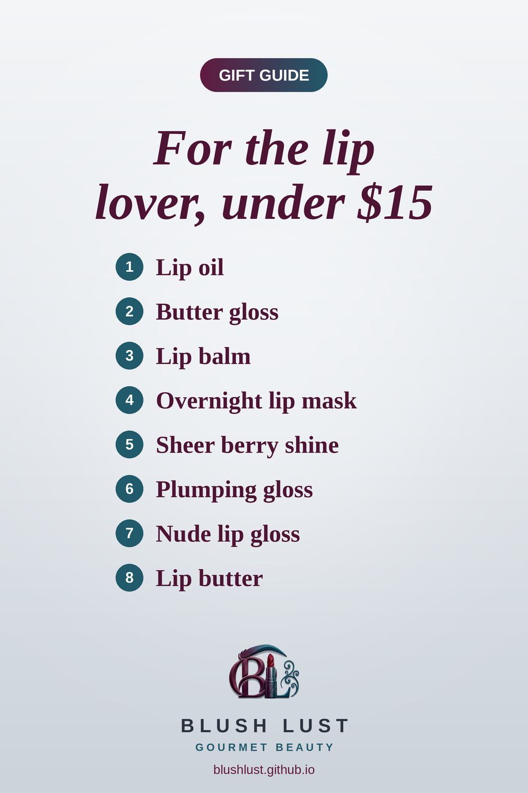

Gifts for the Lip Lover: 8 Viral Lip Dupes Under $15
Glossy, juicy, cult-favourite lips at drugstore prices. Easy gifts for whoever always has a lip product in hand, all on Amazon.ca.
This post contains affiliate links. If you buy through them, we may earn a small commission at no extra cost to you. As an Amazon Associate I earn from qualifying purchases.
NYX Fat Oil Lip Drip
Glossy, cushiony lip oil with a hint of tint. The NYX version is a fan favourite for the same juicy shine.
Shop the dupe on Amazon.ca →NYX Butter Gloss
A non-sticky, high-shine gloss that flatters everyone. NYX Butter Gloss is a long-time drugstore favourite.
Shop the dupe on Amazon.ca →e.l.f. Squeeze Me Lip Balm
A cushiony, glossy balm in a squeeze tube. Beauty shoppers love the e.l.f. one for the same buttery feel.
Shop the dupe on Amazon.ca →e.l.f. Holy Hydration! Lip Mask
Slather it on before bed and wake up to soft, smooth lips. The e.l.f. version is a fan-favourite budget swap.
Shop the dupe on Amazon.ca →e.l.f. Hydrating Core Lip Shine in Ecstatic
A sheer, buildable berry that suits almost everyone. The e.l.f. shade Ecstatic gives the same easy wash of colour.
Shop the dupe on Amazon.ca →e.l.f. Pout Clout Lip Plumping Gloss
A glossy, gently tingly gloss for fuller-looking, juicy lips.
Shop the dupe on Amazon.ca →Wet n Wild MegaSlicks Lip Gloss in Snuggle Sesh
A sheer pinky-nude gloss for glossy, flattering lips.
Shop the dupe on Amazon.ca →Rimmel Oh My Gloss! Butter Me Up Lip Butter
A cushiony, glossy lip butter with a sheer wash of colour, for that glazed-donut lip without the hype price.
Shop the dupe on Amazon.ca →
Prices change often — check Amazon.ca for the current price.